木马计 · V2 控制实验
四个镜头 × 三种控制方式 × 两个种子，共24个新视频。组内固定提示词、MSR参考图、权重、8步、5秒和分辨率。静态关键帧全部由本地 Qwen Image 2.1 BF16 40步生成；本页展示实际推理视频。旧版只作为历史参考。
已生成 24/24 · native768×448 → delivery768×432 · 24fps
完整镜头严格通过 0/24。首尾帧改善了部分动作结尾；下梯开头方向、门闩机械结构、后排持续交战仍未全部解决。
动作节选 · 8秒
下梯2秒 → 夺门交锋3秒 → 军团交战3秒。按人工检查的时间区间剪辑；战斗背景仍有站立和空挥，音轨未做听审，完整镜头仍待返修。
A/B/C 同种子对比 · 40秒
从左到右为MSR、首帧、首尾帧；每个镜头依次显示两个种子。比较视频无声。
四镜头诊断样片 · 20秒（包含失败动作）
逐镜挑选的较好候选，保留完整5秒用于检查缺陷；S16门闩结构错误，不能投入正式成片。
验收记录 · 镜头状态规格 · 冻结输入清单 · 旧版100秒影片
S10 · 奥德修斯向下爬梯
查看已选择的起止关键帧与动作条件
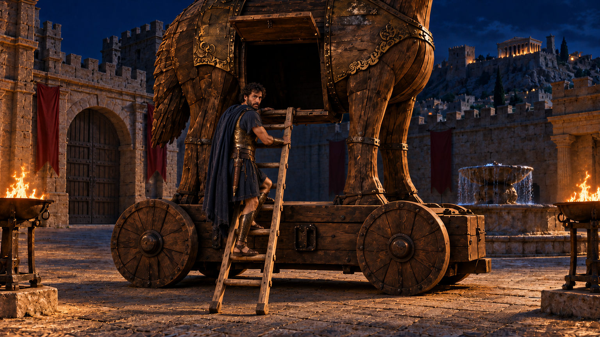
起始状态 · Qwen Image2.1
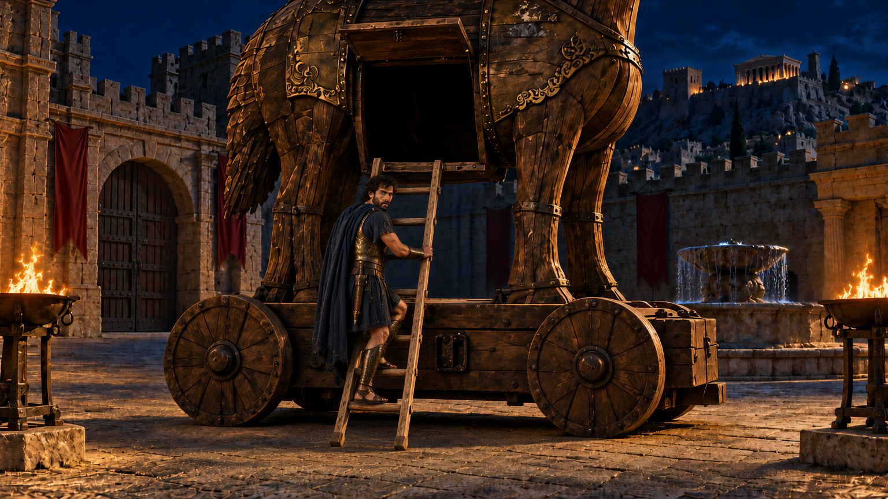
结束状态 · Qwen Image2.1
pelvis visibly moves down at least two rungs；no upward travel or direction reversal；both hands alternate secure ladder grips；identity, sword sheath and horse remain stable
种子 2026100601
A · MSR 参考图
动作或状态失败
0–2秒先向上靠近舱口，3.5秒转身离梯并落地；终点没有停在低两级的梯上。
S10_msr_202610060111个时间采样
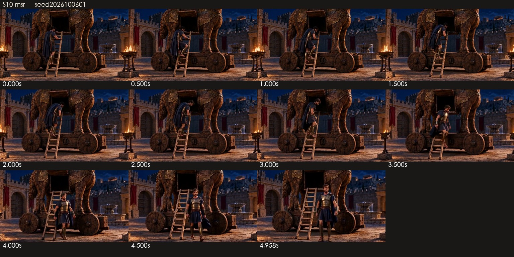
B · MSR＋首帧
动作或状态失败
与同种子MSR轨迹接近：先向上、再转身离梯落地；首帧注入没有修正方向。
S10_msr_first_202610060111个时间采样
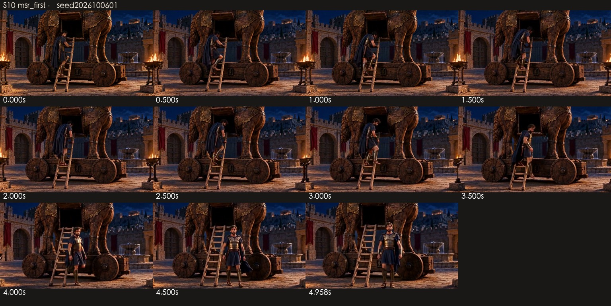
C · MSR＋首尾帧
部分满足，仍有缺陷
末帧引导让后半段下移并保留在梯边/低梯位置，较A/B改善；但前约1.5秒仍向上爬，方向连续性不合格。
S10_msr_first_last_202610060111个时间采样
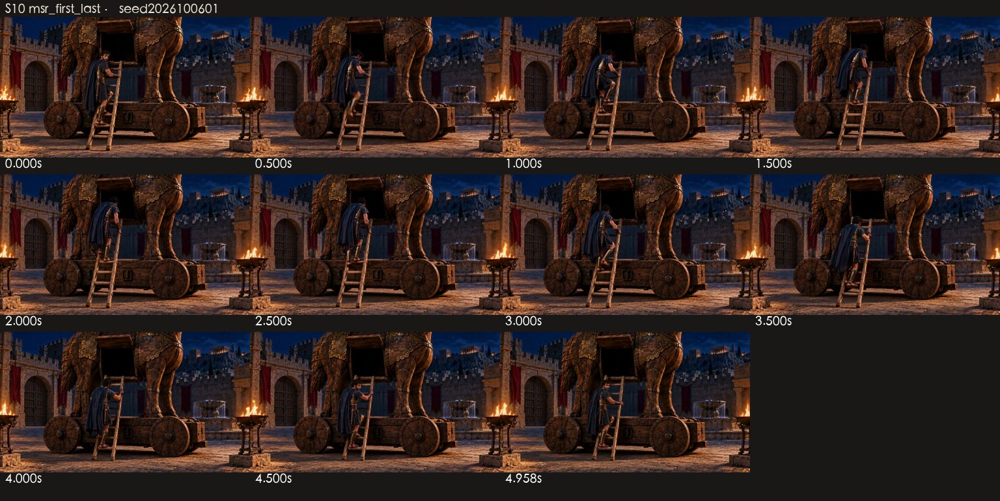
种子 2026100602
A · MSR 参考图
动作或状态失败
先向上爬近舱口，随后转身跳下并离梯；动作方向和终点均违反规格。
S10_msr_202610060211个时间采样
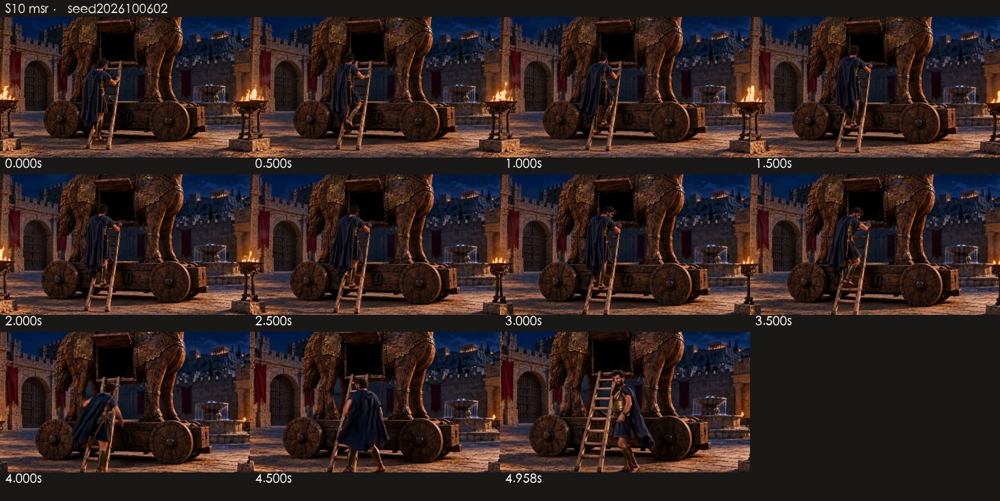
B · MSR＋首帧
动作或状态失败
仍先向上爬，然后转身落地离梯；首帧约束未解决方向与终点。
S10_msr_first_202610060211个时间采样
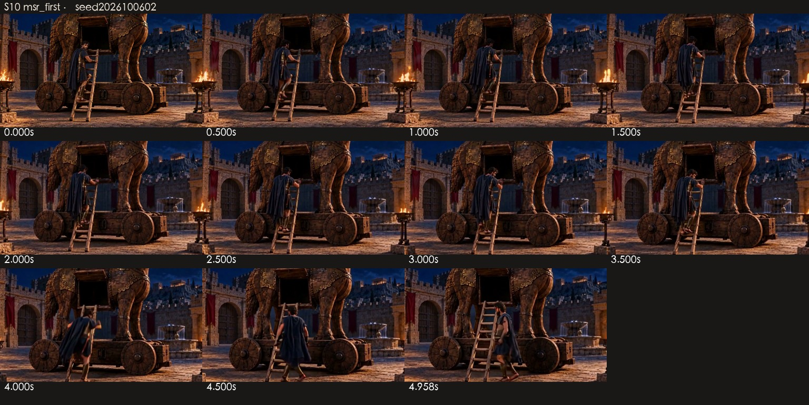
C · MSR＋首尾帧
部分满足，仍有缺陷
末帧引导让后半段下移并保留在梯边/低梯位置，较A/B改善；但前约1.5秒仍向上爬，方向连续性不合格。
S10_msr_first_last_202610060211个时间采样
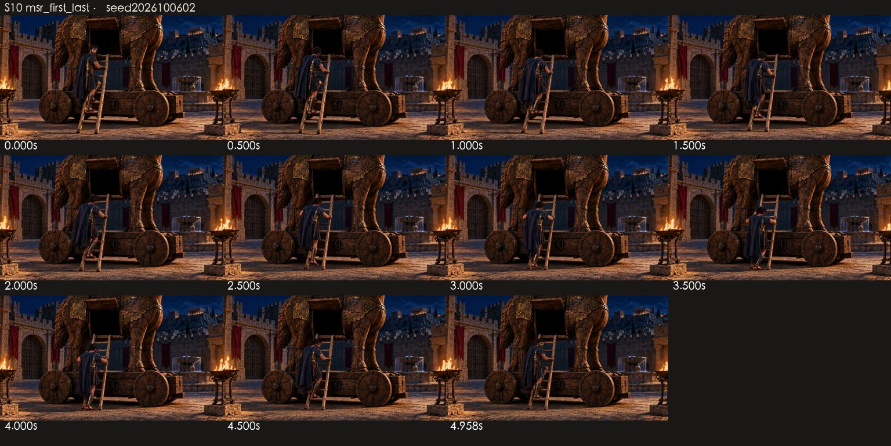
S15 · 剑矛交锋对照
查看已选择的起止关键帧与动作条件
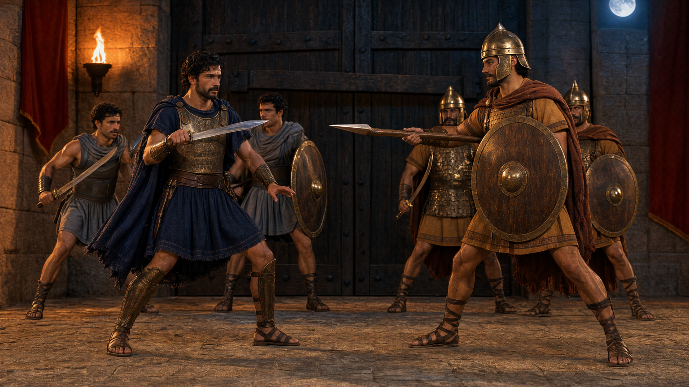
起始状态 · Qwen Image2.1
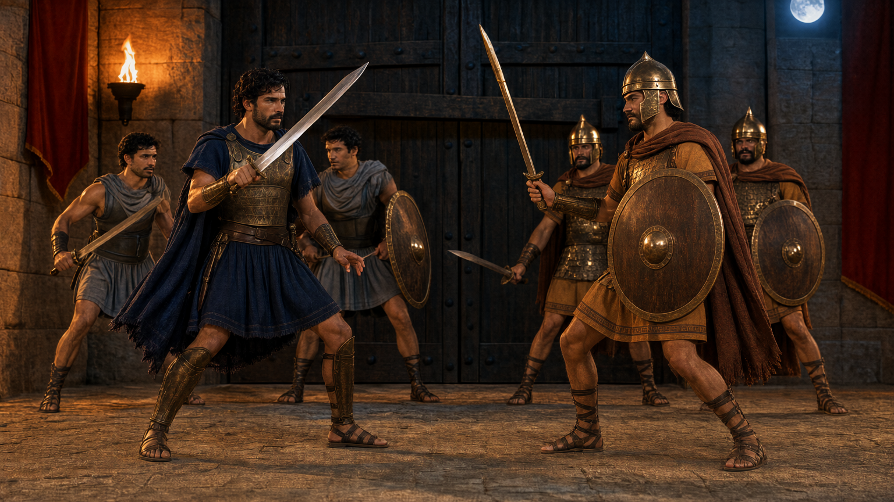
结束状态 · Qwen Image2.1
visible spear thrust and sword parry；no equipment transfer or duplication；both background pairs continue combat；lead faces and gate preserved
种子 2026100601
A · MSR 参考图
部分满足，仍有缺陷
前约2秒主要摆姿，后段前景剑矛交锋与格挡清楚；背景四人的两对持续接触不够可读。
S15_msr_202610060111个时间采样
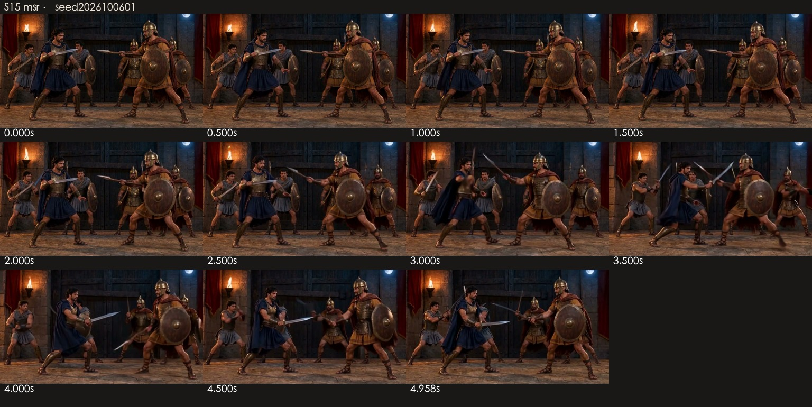
B · MSR＋首帧
部分满足，仍有缺陷
起始姿态稳定，后段前景交锋；与A轨迹接近，未明显改善两对背景战斗的持续性。
S15_msr_first_202610060111个时间采样
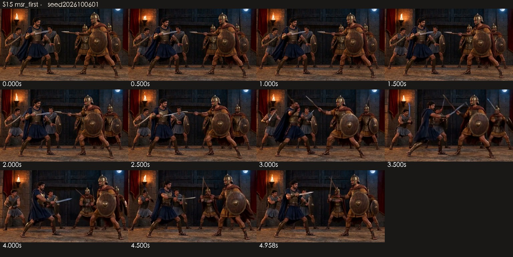
C · MSR＋首尾帧
部分满足，仍有缺陷
约1秒起前景开始连续交锋，较同种子A/B更早；末端剑矛姿态接近结束图，背景持续战斗仍不足。
S15_msr_first_last_202610060111个时间采样
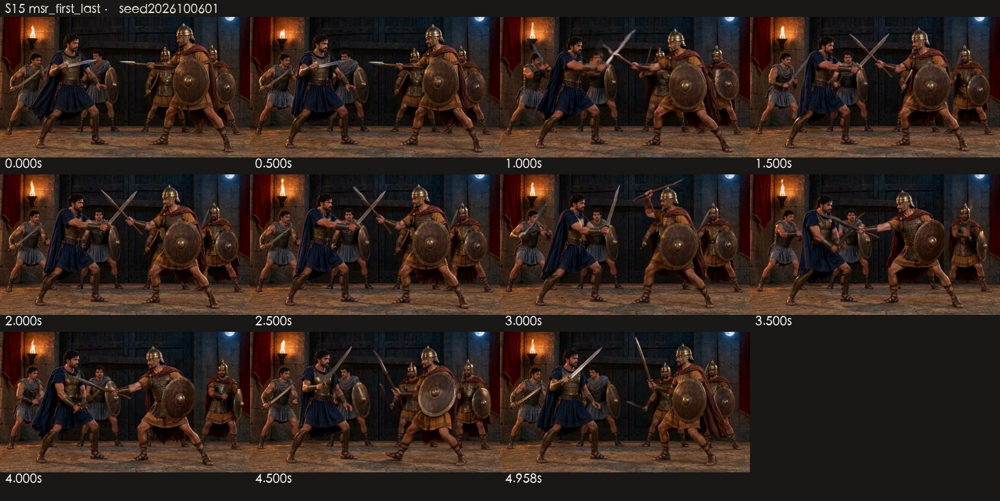
种子 2026100602
A · MSR 参考图
部分满足，仍有缺陷
前景有一次刺击/格挡及回退，装备大体保留；起始约1秒静止，后景较多待机或挥舞。
S15_msr_202610060211个时间采样
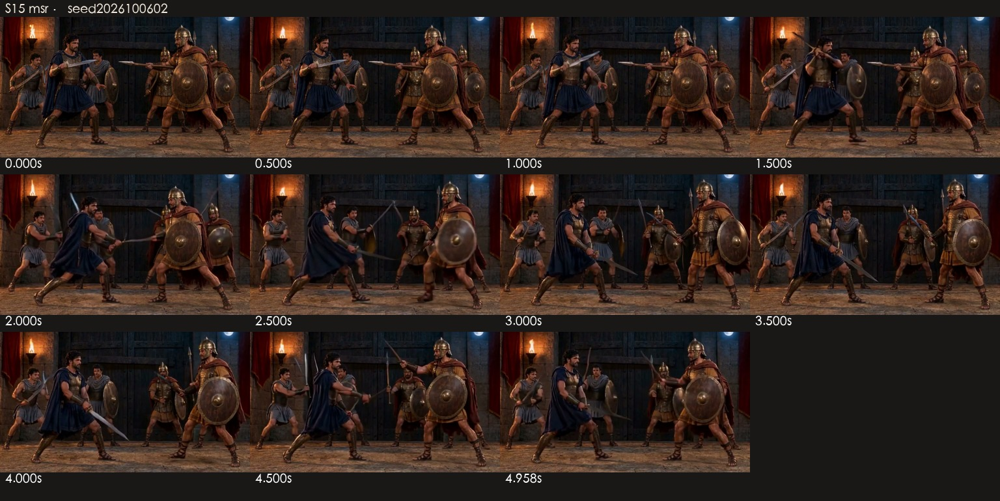
B · MSR＋首帧
部分满足，仍有缺陷
前景刺击、格挡和回退可读；背景中部人物有动作，但两对交锋仍偏弱。
S15_msr_first_202610060211个时间采样
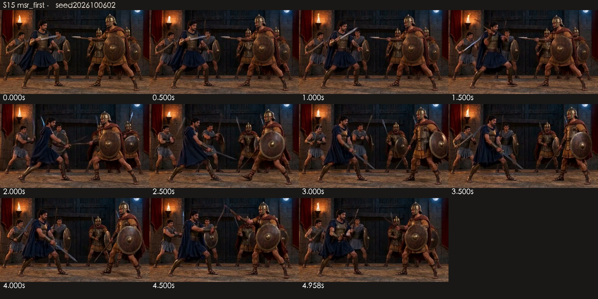
C · MSR＋首尾帧
部分满足，仍有缺陷
约1秒起前景动作，2–3秒格挡清楚，后约1秒停姿；背景不是持续两对对打。
S15_msr_first_last_202610060211个时间采样
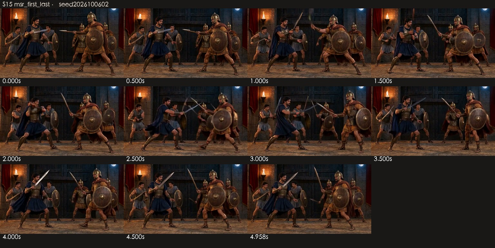
S16 · 双人抬闩与掩护
查看已选择的起止关键帧与动作条件
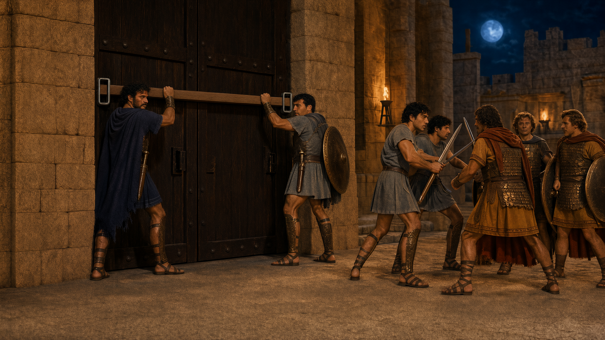
起始状态 · Qwen Image2.1
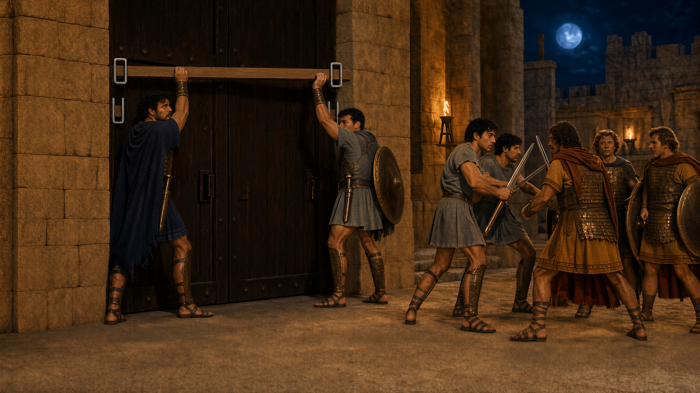
结束状态 · Qwen Image2.1
two operators jointly lift the bar clear of both brackets；four hands stay on bar；no shield appears in operators hands；cover fighters engage throughout；gate remains closed
种子 2026100601
A · MSR 参考图
动作或状态失败
门闩先抬起后放到地面，操作者约2.5秒已拔剑，违背四手持闩/剑入鞘；托架随木闩变形移动。
S16_msr_202610060111个时间采样
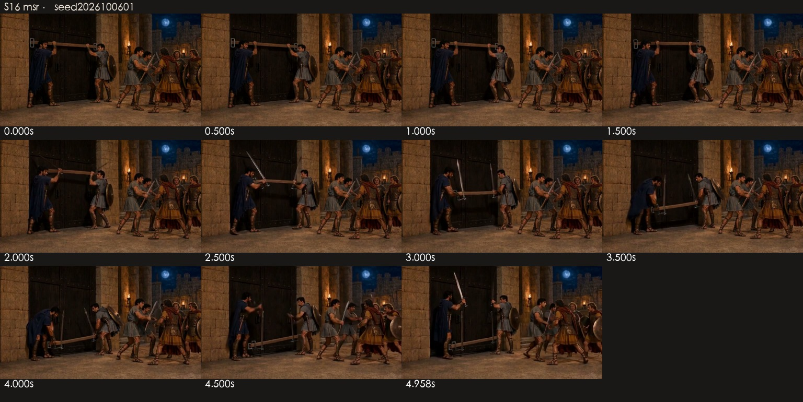
B · MSR＋首帧
动作或状态失败
首帧未修正行为：中段持闩同时拔剑，后段闩落地；固定托架随闩变化。
S16_msr_first_202610060111个时间采样
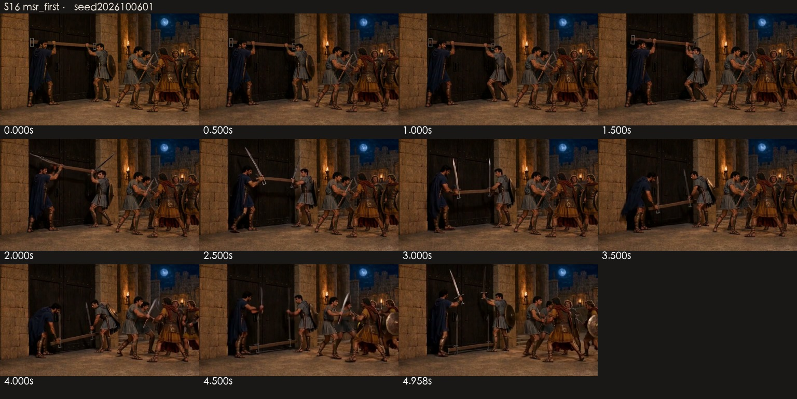
C · MSR＋首尾帧
动作或状态失败
末端更接近举闩姿态，但中段仍出现拔剑并把闩降到腰部，后又抬回；门闩托架移动/新增错误保留。
S16_msr_first_last_202610060111个时间采样
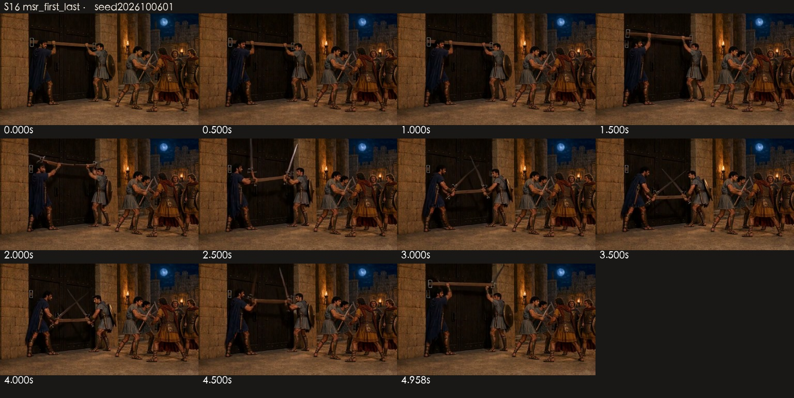
种子 2026100602
A · MSR 参考图
动作或状态失败
门闩抬高后停留在上方，操作者随后拔剑并放手，木闩仍悬挂；托架没有保持原位置。
S16_msr_202610060211个时间采样
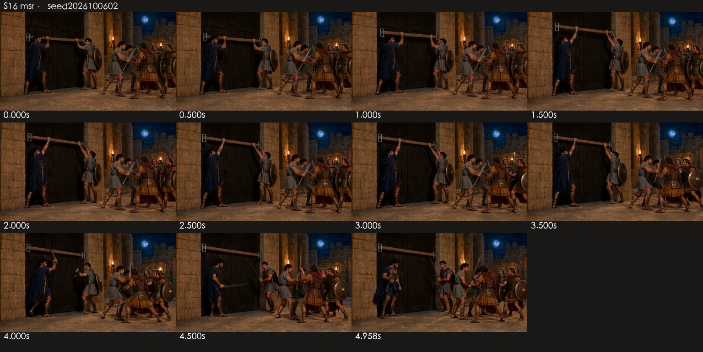
B · MSR＋首帧
动作或状态失败
闩抬高后两人放手、拔剑，木闩留在上方，仍有闭环托架移位。
S16_msr_first_202610060211个时间采样
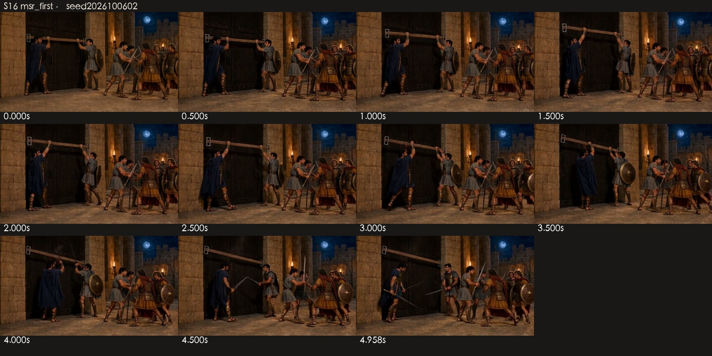
C · MSR＋首尾帧
部分满足，仍有缺陷
操作者比A/B更能维持持闩姿态，未见明确拔剑；但木闩先升后降再升，托架移动/新增的结构错误保留。
S16_msr_first_last_202610060211个时间采样
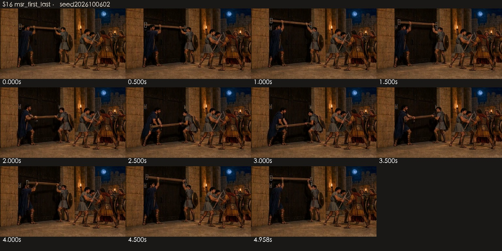
S20 · 大军团持续群战
查看已选择的起止关键帧与动作条件
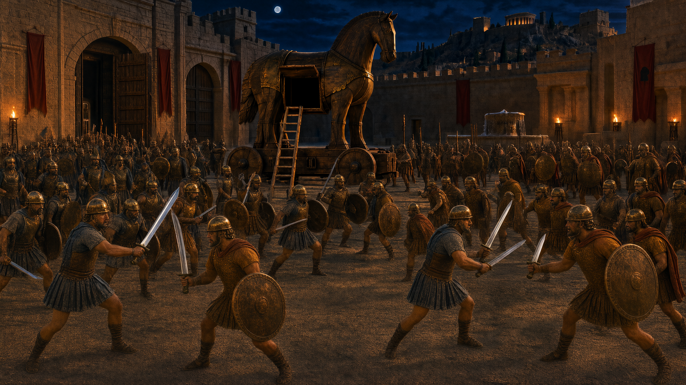
起始状态 · Qwen Image2.1
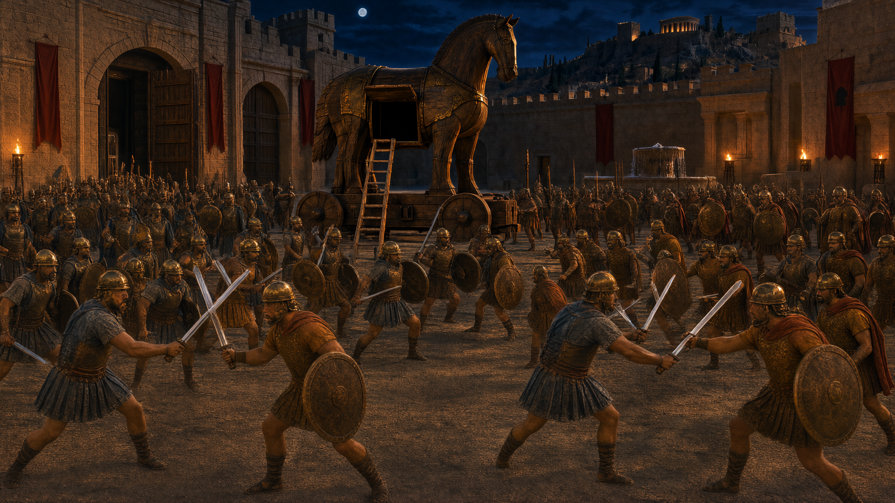
结束状态 · Qwen Image2.1
both foreground pairs visibly strike, block and recoil；middle and rear lines fight rather than parade or stand still；factions visually distinct；no living horse motion or hero duplication；spatial landmarks remain fixed
种子 2026100601
A · MSR 参考图
部分满足，仍有缺陷
前景有交锋，随后大量转身走位；画面明显拉远，违背本次固定机位条件。后排仍偏列队。
S20_msr_202610060111个时间采样
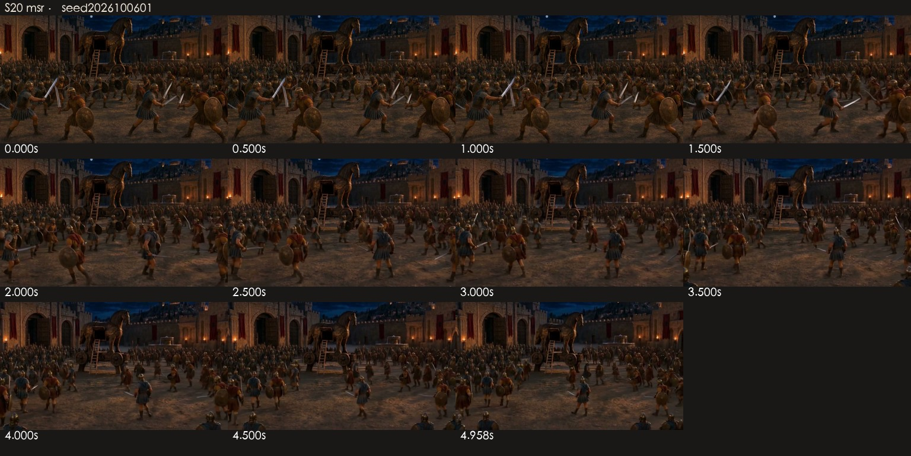
B · MSR＋首帧
部分满足，仍有缺陷
与同种子A接近，前景交锋后转身走位并拉远；首帧未解决群战层次或固定构图。
S20_msr_first_202610060111个时间采样
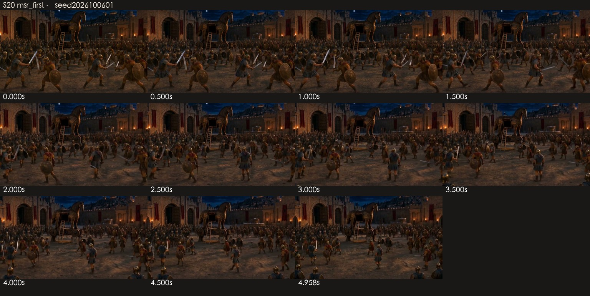
C · MSR＋首尾帧
部分满足，仍有缺陷
构图较A/B稳定，结尾恢复目标对打姿态；中段前景仍转身走位，后排持续交战不足。
S20_msr_first_last_202610060111个时间采样
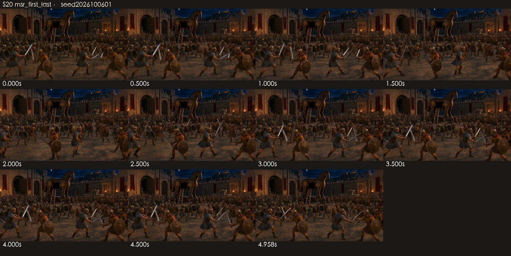
种子 2026100602
A · MSR 参考图
部分满足，仍有缺陷
两组前景对打持续性较好，颜色可区分；构图仍缓慢拉远，中后景多摆姿/挥舞，未形成足够清晰持续交锋。
S20_msr_202610060211个时间采样
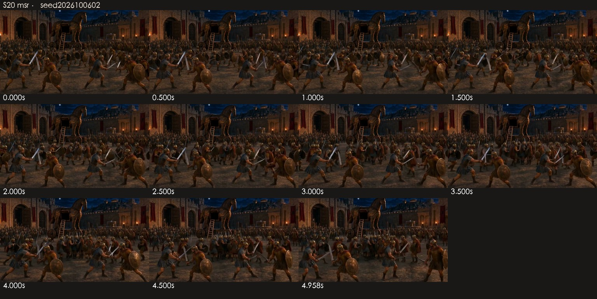
B · MSR＋首帧
部分满足，仍有缺陷
前景两对剑盾互动可读，后景存在武器动作；仍有镜头拉远与后排列队感。
S20_msr_first_202610060211个时间采样
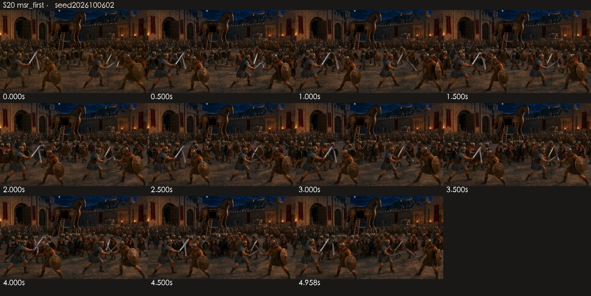
C · MSR＋首尾帧
部分满足，仍有缺陷
本组前景和中景交锋最清楚，阵营颜色与构图较稳定；后排仍偏列队/摆姿，不能据此确认三层持续群战通过。
S20_msr_first_last_202610060211个时间采样
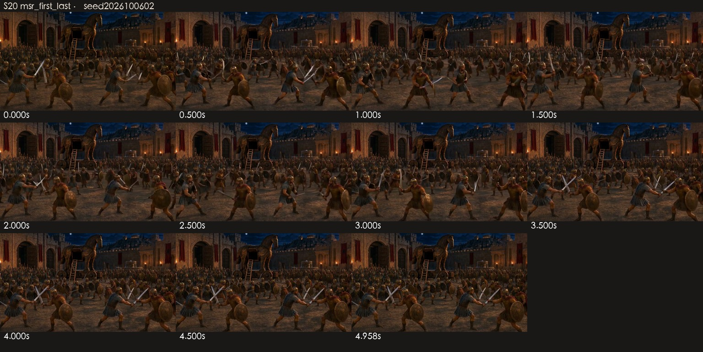
人工评价依据每段11个采样帧（每0.5秒＋末帧）；不等同于逐帧动作和音轨终验。首尾约束绑定原生第0/120帧，交付视频为前120帧。严格通过与较好候选分别记录。